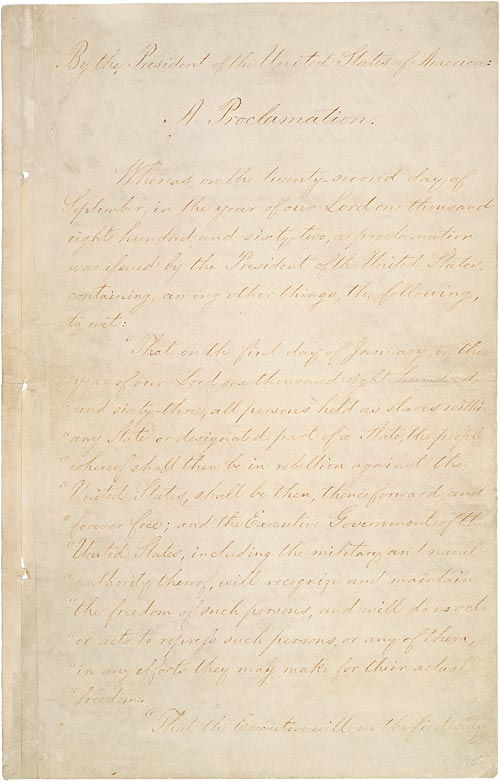

U.S. FOREIGN POLICY / WEEK 04
The Civil War and America’s growing power
- 1861–1897
- Dr. Murat Toman
U.S. FOREIGN POLICY / WEEK 04
The main idea
- The Union and Confederacy competed for foreign support. After the war, industrial growth expanded U.S. resources, while disputes over rights and territory continued.
- Industrial development increased resources that could support trade, transport, and military activity. Resources alone did not dictate a particular foreign policy. Political leaders, business interests, workers, and other groups contested how national capabilities should be used. Greater capacity created options, while politics shaped choices.
U.S. FOREIGN POLICY / WEEK 04
Where this week fits in history
| When | Selected event |
|---|---|
| 1848 | Treaty of Guadalupe Hidalgo |
| 1863 | Emancipation Proclamation |
| 1898 | War with Spain and overseas expansion |
U.S. FOREIGN POLICY / WEEK 04
History through a source

- This document is evidence of an official statement or decision. Its wording and appearance help us identify the source, but its promises still need to be checked against evidence of actions and results.
- Use the linked transcription or PDF to read the text. Ask who issued it, what it claims, and whose viewpoint is missing.
U.S. FOREIGN POLICY / WEEK 04
Key words explained
- Confederacy: The seceding Southern states that fought the Union in the American Civil War.
- Emancipation: Release from slavery.
U.S. FOREIGN POLICY / WEEK 04
Key words explained
- Blockade: An attempt to stop movement or trade into or out of an area, usually using military force.
- Industrial capacity: The ability to produce goods, transport supplies, and support large-scale activity.
U.S. FOREIGN POLICY / WEEK 04
Recognition could change the war
- The Confederacy wanted foreign governments to accept it as an independent state. The Union worked to prevent that outcome.
- Trade, credit, and diplomatic support could affect each side’s prospects. European governments made their own calculations rather than simply following American demands.
U.S. FOREIGN POLICY / WEEK 04
Emancipation changed the meaning of the conflict
- The Emancipation Proclamation connected the Union war effort more directly to ending slavery in the areas it specified. This mattered to audiences abroad as well as within the United States.
- It made support for the Confederacy more politically difficult in some settings. The document’s actual scope still matters when evaluating its claims.
U.S. FOREIGN POLICY / WEEK 04
Military action could create diplomatic risks
- The Union blockade sought to restrict Confederate trade and resources. It also affected foreign shipping and commercial interests.
- A government fighting for survival still had to consider whether its actions might bring another power into the conflict. Military and diplomatic decisions therefore shaped one another.
U.S. FOREIGN POLICY / WEEK 04
Postwar expansion continued conflicts over sovereignty
- After the Civil War, U.S. authority and settlement expanded across the continent.
- Treaties with Indigenous nations recorded obligations and claims, but the written agreement did not tell the whole story of power or implementation. Reading a treaty requires attention to its parties, promised rights, and later consequences.
U.S. FOREIGN POLICY / WEEK 04
Industry created possibilities, not automatic decisions
- Industrial development increased resources that could support trade, transport, and military activity. Resources alone did not dictate a particular foreign policy.
- Political leaders, business interests, workers, and other groups contested how national capabilities should be used. Greater capacity created options, while politics shaped choices.
U.S. FOREIGN POLICY / WEEK 04
Politics at home and abroad
- At home: The war concerned the Union’s survival and slavery, followed by disputes over rights and expansion.
- Abroad: The Union sought to prevent recognition of the Confederacy and limit foreign intervention.
- The connection: domestic support and resources affect what leaders can promise abroad. International events can change domestic priorities.
U.S. FOREIGN POLICY / WEEK 04
How power worked
| Form of influence | How it operated in this week |
|---|---|
| Hard power | Armies and the blockade restricted the Confederacy’s choices and resources. |
| Soft power | Antislavery claims could strengthen the Union’s appeal abroad, alongside strategic and commercial calculations. |
- Legitimacy and military capacity interacted; emancipation was more than a diplomatic messaging instrument.
U.S. FOREIGN POLICY / WEEK 04
A worked explanation
- Did industrial growth make overseas expansion inevitable?
- No. It supplied resources and new possibilities. Domestic choices and international conditions still shaped how those resources were used.
- Why this matters: Industrial development increased resources that could support trade, transport, and military activity. Resources alone did not dictate a particular foreign policy. Political leaders, business interests, workers, and other groups contested how national capabilities should be used. Greater capacity created options, while politics shaped choices.
U.S. FOREIGN POLICY / WEEK 04
Practice with the documents
- Identify where the Emancipation Proclamation applied.
- Identify a promise in the Fort Laramie treaty.
- Explain why you would need evidence beyond each text to judge whether its promises changed people’s lives.
U.S. FOREIGN POLICY / WEEK 04
How to support an answer
- A claim is what you argue. Evidence is a specific passage, event, or finding that supports it. Explain the connection between them.
- Example structure: “The document claims ____. This suggests ____. It cannot by itself show ____.”
- A speech can establish what a speaker said. Evidence of actions and consequences is needed to judge whether the policy worked.
U.S. FOREIGN POLICY / WEEK 04
What to remember
- Recognition was an important strategic objective, not a ceremonial gesture.
- Emancipation changed the substance and international meaning of the Union cause.
- Military coercion created diplomatic risks involving third parties.
- Industrial growth enlarged possible capabilities without determining foreign-policy choices.
U.S. FOREIGN POLICY / WEEK 04
Reading guide
- Emancipation Proclamation (1863) A document from the period. Use it to identify what officials claimed or authorized, then check other evidence for the consequences. External source page; access may vary.
- Treaty of Fort Laramie (1868) A document from the period. Use it to identify what officials claimed or authorized, then check other evidence for the consequences. External source page; access may vary.
Emancipation Proclamation (1863) — External source page; access may vary.
Treaty of Fort Laramie (1868) — External source page; access may vary.
U.S. FOREIGN POLICY / WEEK 04
Reading guide
- Preventing Diplomatic Recognition of the Confederacy A retired historical background essay. Use it for context, and compare its account with scholarship and other perspectives. External source page; access may vary.
- From Colony to Superpower: U.S. Foreign Relations since 1776 A scholarly narrative companion for historical periods. Select the relevant period; no unverified page assignments are supplied. Publisher record; full text may require institutional access.
Preventing Diplomatic Recognition of the Confederacy — External source page; access may vary.
Office of the Historian Milestones: retired series, retained online for historical reference; not a current-policy source.
From Colony to Superpower: U.S. Foreign Relations since 1776 — Publisher record; full text may require institutional access.
U.S. FOREIGN POLICY / WEEK 04
Video and audio guide
- Lecture 18 — “War So Terrible”: Why the Union Won and the Confederacy Lost at Home and Abroad Place diplomacy alongside military capacity, slavery, and political leadership in explaining Union victory.
- Lecture 18 — “War So Terrible”: Why the Union Won and the Confederacy Lost at Home and Abroad (audio edition) Listen for how international recognition depended on developments inside the warring societies.
Lecture 18 — “War So Terrible”: Why the Union Won and the Confederacy Lost at Home and Abroad — Free provider page; external player may require consent or be region-dependent
Focus especially on chapter 2, beginning 08:10; video, audio and transcript are alternative formats of the same lecture.
Lecture 18 — “War So Terrible”: Why the Union Won and the Confederacy Lost at Home and Abroad (audio edition) — Free provider page; external player may require consent or be region-dependent
Same lecture as the video: choose one format rather than assigning twice. MP3 link verified in page HTML.
U.S. FOREIGN POLICY / WEEK 04
Using the sources carefully
- Linked readings and media offer particular viewpoints. Compare them with the lesson and other evidence. Some sources require institutional access.
- Media links and descriptions were checked when the course resources were prepared. Full playback was not tested.
- The Yale audio and video entries are two formats of the same lecture. Choose one format rather than treating both as separate assignments.